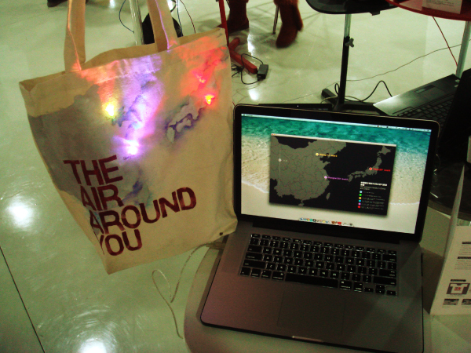
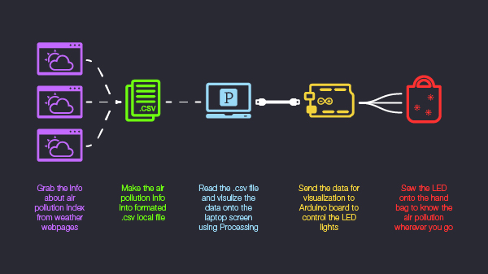
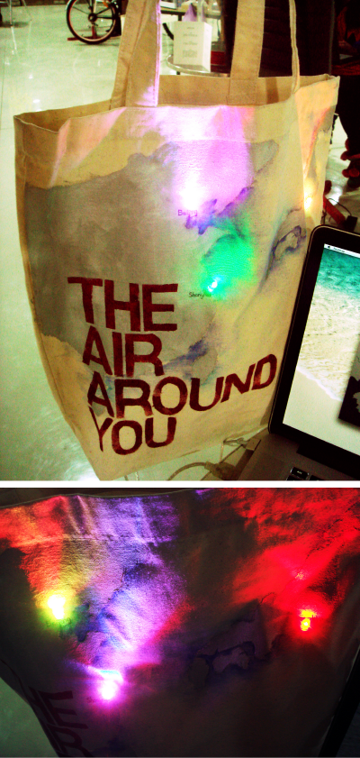
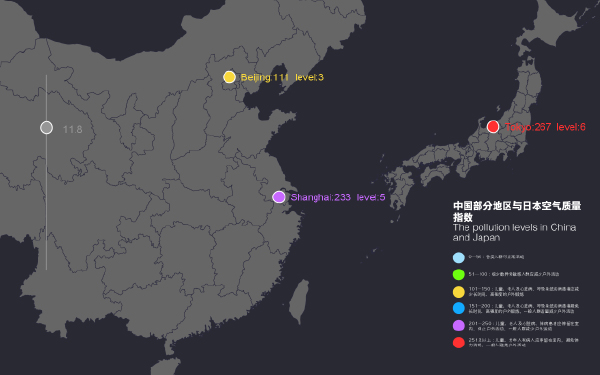

The Air Around You 气·分
Basic Info
Type: Interactive Installation
Tool: AI / PS / Processing / Arduino
Team member: 2
Work in charge: Visual(part) / Software and Hardware Programming
Requirement & Purpose
The installation focused on the air pollution and smog in recent China. By grabbing the air quality index from the Internet and creating local XML data sheet, the computer provided a graphic interface and sent the data to the Arduino to control three RGB LEDs which phusically represented the air condition.
The demo used a laptop while the next step will be using a Raspberry Pi to fully realize portability.

Installation setting

Interactive model

LED light effect

Interface of visulization on laptop screen